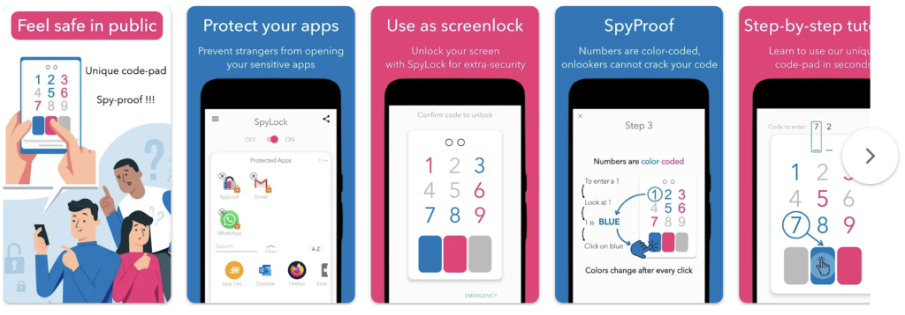

Spylock
Published:
Spylock
Spylock used a shoulder-surfing proof pin-entry method to help users lock apps on their smartphones. I learned Kotlin and the entire Android development suite, including billing. I also learned a lot about UX/UI design via this project.
Spylock might still be on the Play Store:
https://play.google.com/store/apps/details?id=com.grizai.android.spylock

Spylock Tour with Voice Over
Spylock Teaser
Spylock teaser:
https://youtu.be/PuxXKq_5pF4
Spylock PlayStore
Ad I used on social media at the time:
https://youtube.com/shorts/rvN4rPsGNPQ
Lessons Learned
I killed SpyLock after 5 months (including learning and development) because the bulk of the user traction came from teenagers who do not have the desire to pay for this kind of service. I was not interested in an advertising-based funding model.